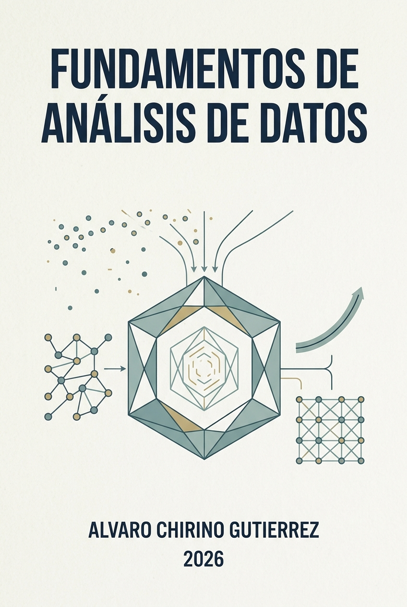

Fundamentos de Análisis de Datos
Notas de Clase y Guía de Aprendizaje en R
Bienvenido

¡Bienvenido al libro de apuntes de Fundamentos de Análisis de Datos! Este texto de apoyo ha sido diseñado específicamente para la Maestría en Inteligencia Artificial y Gestión de Datos para Finanzas, Economía y Negocios de la Universidad Católica Boliviana (UCB).
Este libro sirve como guía práctica, teórica y metodológica para nuestras 24 sesiones de aprendizaje, ofreciendo un hilo conductor estructurado para navegar de forma fluida a través de los conceptos esenciales del ciclo de vida de los datos: desde su adquisición y limpieza hasta su transformación y comunicación interactiva.
Propósito del Curso
El propósito principal de esta materia es proporcionar a los estudiantes los conocimientos, criterios y habilidades técnicas esenciales para recolectar, limpiar, explorar, analizar e interpretar datos en diversos contextos. A través de este proceso, se busca establecer una base sólida y reproducible para el desarrollo de productos de datos de alto impacto, como dashboards dinámicos y reportes científicos interactivos.
Al finalizar el módulo, dominarás las etapas iniciales de la ciencia de datos, garantizando que cualquier conjunto de información con el que trabajes sea de alta calidad, válido, reproducible y útil para el modelado analítico o la toma de decisiones empresariales.
Estructura del Libro
A diferencia de un programa curricular rígido, este libro está diseñado para ser un compañero de desarrollo interactivo. El contenido se divide en tres partes fundamentales de un flujo moderno de análisis de datos, organizadas en un máximo de tres capítulos sustantivos cada una:
Parte I: Adquisición, Transformación y Manipulación de Datos
- Capítulo 1: Adquisición de Datos: Configuración del entorno profesional de trabajo (R, RStudio, Git y GitHub) e ingesta de diversas fuentes: archivos planos (CSV, TXT), bases de datos, APIs (JSON/XML) y técnicas iniciales de Web Scraping con
rvest. - Capítulo 2: Filosofía Tidy Data: El arte de estructurar datos desordenados y la manipulación avanzada de dataframes utilizando la potencia de la suite
tidyverse(particularmentedplyrytidyr). - Capítulo 3: Datos de Tipo Específico: Tratamiento y limpieza avanzada de cadenas de texto mediante Expresiones Regulares (Regex) con
stringry la correcta administración de fechas, horas y zonas horarias conlubridate.
Parte II: Análisis Exploratorio y Tratamiento de Datos Faltantes
- Capítulo 4: Análisis Exploratorio de Datos (EDA): Descubrimiento de patrones mediante estadística descriptiva analítica, medidas de resumen robustas y visualización de datos científica utilizando la gramática de gráficos de
ggplot2. - Capítulo 5: Tratamiento de Datos Faltantes: Diagnóstico científico de mecanismos de pérdida de datos (MCAR, MAR, MNAR) e implementación de estrategias de imputación simple y múltiple para evitar sesgos en modelos posteriores.
- Capítulo 6: Dashboards y KPIs: El paso de la exploración a la acción. Diseño metodológico de Indicadores Clave de Rendimiento (KPIs) y desarrollo de dashboards interactivos utilizando
Shinyyflexdashboarden R.
III: Wrangling Avanzado, Big Data y Datos Desequilibrados
- Capítulo 7: Wrangling Avanzado y Grandes Volúmenes: Programación funcional aplicada al procesamiento de datos con
purrr(iteración sobre listas y dataframes complejos), cruces relacionales avanzados y optimización para Big Data. - Capítulo 8: Ingeniería de Características (Feature Engineering): Preparación de datos para modelos predictivos y de Machine Learning mediante la creación de nuevas variables, escalado numérico, codificación de variables categóricas y selección de atributos.
- Capítulo 9: Tratamiento de Datos Desequilibrados: Diagnóstico de desbalance de clases en problemas de clasificación, y la aplicación práctica de técnicas de remuestreo (over-sampling, under-sampling) y balanceo de datos para modelos de clasificación equitativos.
Metodología y Logística de Clases
Las clases se desarrollan de forma presencial/sincrónica bajo una modalidad de taller práctico constante (hands-on):
- Sesiones: 24 sesiones de 2.5 horas de duración cada una (Lunes, Miércoles y Viernes).
- Horarios:
- Lunes y Miércoles: 20:15 a 22:45
- Viernes: 19:00 a 21:30
- Estructura de cada Sesión: Para optimizar el rendimiento cognitivo, cada sesión de 150 minutos se divide de la siguiente manera:
- Primer Bloque (90 min): Teoría conceptual, discusión y desarrollo del código base.
- Receso (15 min): Pausa para descanso.
- Segundo Bloque (45 min): Taller práctico aplicado, resolución de problemas y avance guiado.
- Ecosistema Tecnológico: Operaremos bajo la filosofía de investigación reproducible utilizando exclusivamente R, el entorno de desarrollo integrado RStudio y el control de versiones con Git / GitHub para asegurar que el código sea auditable y transferible de forma profesional.
Sistema de Evaluación (100 Puntos)
La evaluación de la materia es netamente práctica y acumulativa, diseñada para medir el dominio real de las habilidades adquiridas:
- Laboratorio 1 (30 puntos): Ejercicios prácticos que abarcan las destrezas de adquisición (scraping y APIs), estructuración bajo principios Tidy Data, manipulación específica (regex y fechas) y visualización/EDA.
- Laboratorio 2 (30 puntos): Práctica de nivel avanzado enfocada en diagnóstico e imputación de datos faltantes, programación funcional con
purrr, ingeniería de características y tratamiento de clases desbalanceadas. - Trabajo Práctico Final (40 puntos) - Dashboard de Métricas:
- Entregable: Un dashboard interactivo completamente funcional en R (
Shinyoflexdashboard) desplegado de manera pública o ejecutable desde GitHub. - Métricas y KPIs: El dashboard debe diseñar, calcular e ilustrar de forma clara Indicadores Clave de Rendimiento (KPIs) de valor analítico.
- Dataset Nacional: Se exige el uso estricto de un dataset de origen boliviano (datos públicos, censos, encuestas nacionales, datos financieros sectoriales bolivianos, etc.) para fomentar el análisis de la realidad local.
- Fuera de Dominio: El proyecto debe enfocarse obligatoriamente en un área temática diferente al área de dominio profesional actual o de pregrado del estudiante, con el fin de sacarlo de su zona de confort y demostrar su versatilidad analítica en nuevos contextos.
- Entregable: Un dashboard interactivo completamente funcional en R (
Referencias Bibliográficas Clave
A lo largo del libro y de las sesiones haremos uso constante de las siguientes referencias bibliográficas fundamentales (todas ellas disponibles de forma libre y gratuita):
- Wickham, H., Grolemund, G., & Çetinkaya-Rundel, M. (2023). R for Data Science (2nd ed.). O’Reilly Media.
- Boehmke, B. (2016). Data Wrangling with R. Springer.
- Nota: Referencia fundamental para expresiones regulares, manejo avanzado de estructuras de control, tipos de datos específicos, listas y web scraping práctico en R.
- Kuhn, M., & Johnson, K. (2019). Feature Engineering and Selection: A Practical Approach for Predictive Models. CRC Press.
- Lovelace, R., Nowosad, J., & Muenchow, J. (2019). Geocomputation with R. CRC Press.